怎么操作系统
说明各功能入口与操作步骤。概念与算法见知识库；数据对照见样例（芜湖 · T13J · 2025年01月）。
快速入门
登录后点左上角打开侧栏，再进各功能；无权限的菜单会隐藏。
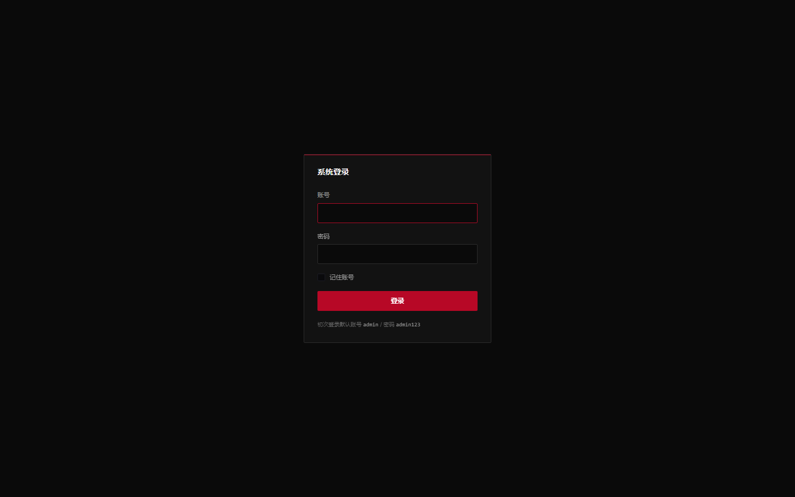
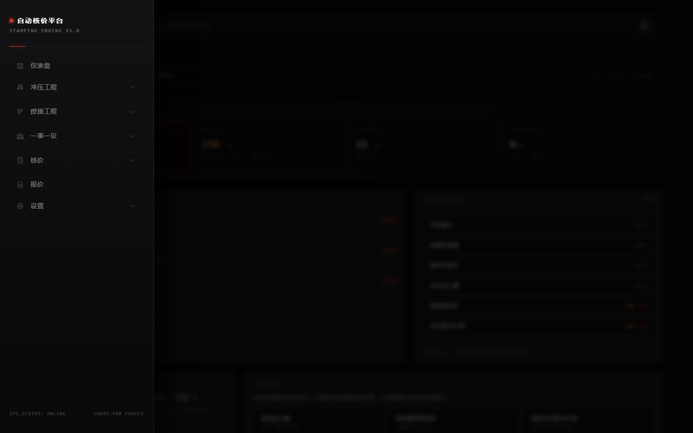
- 登录 默认管理员账号见登录页提示。会话失效会跳回登录。
- 打开导航 点左上角菜单展开侧栏：仪表盘 → 冲压工程 → 焊接工程 → 一事一议 → 核价 → 采购价格协议 → 文件溯源 → 工程变更（设计变更、材料变更）→ 主数据 → 设置。没有单独的「报价」菜单。
- 先定维度 上传/计算前确认基地、项目、清单版本、年、月一致，避免算到空范围。
- 列表只读核对 上传/计算负责写入；列表负责查询、审核、导出。明细使用操作列按钮，不点击整行。
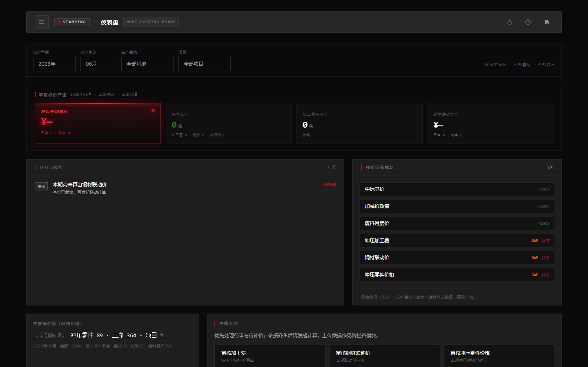
冲压工程
自制件工艺 + 年度费用。冲次单价一年一传；模具单价是当前生效档，不算年。
- 冲压模具 上传模具布点；模具清单；维护钢板模 / 级进模单价与分摊万台。
- 冲压工艺 上传工艺确认表；冲压零件列表核对自制件与工序。
- 冲次单价 按年 + 基地上传吨位矩阵，供冲压加工费使用。
- 冲压加工费 按年 + 基地 + 项目计算；缺失时引擎可自动补算。
- 冲压模具费 按年 + 基地 + 项目，用布点重量 × 模具单价算出元/件最终模具费。引擎：有布点且当年无结果行时自动补算（缺生效模具单价就算不下去）。零件价页不补算；查不到档案记 0。
- 冲压检具费 上传检具档案（万元与分摊万台）。零件核价时万元÷万台 = 元/件；无档案记 0。
焊接工程
先有材料清单树，再挂焊接与采购集合。采购对象不管价，只回答「买哪些」。
- 材料清单 上传材料清单、材料清单列表、产品结构、零件用在哪。同一套 BOM。
- 焊接单价 一年一传；拆解与成品焊接费都依赖它。
- 包装运输费 按年维护成品侧运输 / 仓储捆包。缺档只提醒，不拦住启动。
- 采购对象 从材料清单生成集合：退化供货件、分总成、冲压件列入；标准件/胶等与异常进核对区。列表可确认外发/自制、指定供应商、导出。
- 年度零件价 外购件、沿用件、分总成一口价等取价来源。
- 焊接工艺拆解 按清单 + 当年焊接单价生成；已有结果时引擎默认不覆盖。
- 焊接费 按拆解结果算成品焊接费；引擎可对缺失结果自动补算。
一事一议
钢价联动的输入。每月核价前要齐基准价、厚度加减价政策、废料月度价。
- 加减价政策 上传厚度加减价，按牌号大类（冷轧 / 镀锌 / 酸洗）落档。某一钢厂本期已经有厚度政策时，料厚必须命中阶梯，对不上就不能启动。该钢厂本期没有厚度政策时按基价计，不因此拦住。宽度加减价本期不参与核算。
- 基准价格 当月各钢厂牌号基价；缺了就不能启动。牌号必须已在主数据牌号分类。
- 中标钢厂厚度价格一览表 选定年/月/基地后预览或导出：中标基价叠厚度加减价。不改核价库。
- 废料月度销售价 当月废料扣减依据；缺了就不能启动。
核价
每月核价是一条单向链：钢材价格 → 冲压件价格 → 总成价格。后一步只读前一步已经写入的结果，跳步或倒着算都会缺价。 三个菜单各有「计算」和「一览」：计算写入，一览查看 / 导出。也可交给下一节的自动核价引擎按同一顺序一次跑完。 签二级厂走一级菜单「采购价格协议」，不在这条链上、不算价。
一事一议的当月基价 / 政策 / 废料 → 落到每张板的规格，写出当月钢价。
读当月钢价，加上加工费、模具费、检具费，写出自制件当月单价。
按材料清单从叶子加到根：自制用冲压件价，外购用年度价，再加焊接等 → 成品总费用。
钢材价格
先在「一事一议」备齐当月基准价格、厚度加减价、废料月度销售价。缺基价或废料，后面就启动不了；某一钢厂本期已有厚度政策但料厚未落入阶梯，同样启动不了。 再到「核价 → 冲压钢材联动价」：计算页把政策落到工艺里的牌号 / 料厚 / 规格，一览页看当月钢价。 这一步只出材料单价（钢），还没有零件号上的元/件。
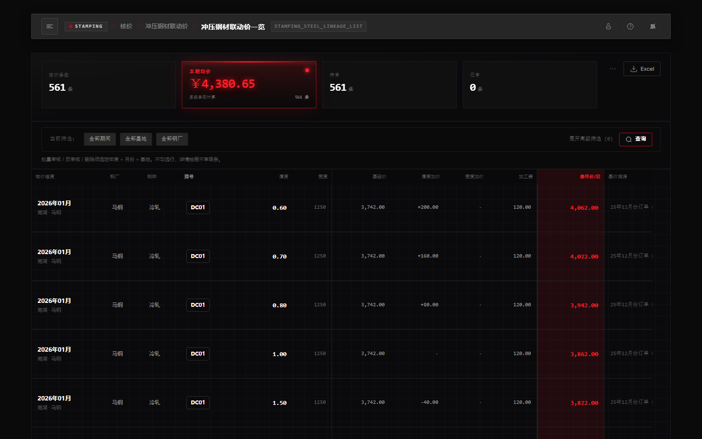
冲压件价格
「核价 → 冲压零件价格核算」读上一步钢价，按冲压工艺算每一张自制件： 材料净额（含废料扣减）+ 当年加工费 + 模具费 + 检具费 → 当月单价（元/件）。 没有钢价，自制件就算不出来。外购件、沿用件、分总成一口价不走这一页，走焊接工程里的年度零件价。 本页不自动补算模具费；无模具 / 检具档案则对应费用记 0。要补齐模具费，先跑冲压工程的模具费计算，或交给自动核价引擎。
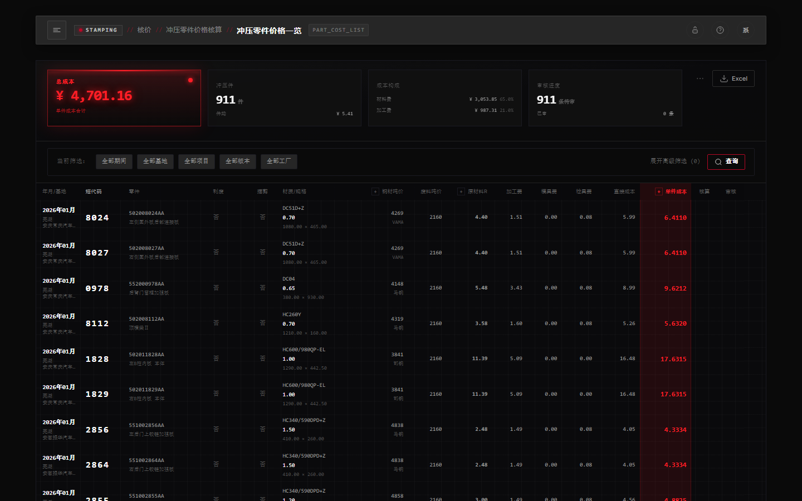
总成价格
「核价 → 总成核价」按材料清单自下而上汇总：叶子先有价，再滚到分总成、供货总成。 自制叶子用②的当月冲压件价；外购 / 一口价用年度零件价；焊装再加上成品焊接费等 → 月总账，再加间接费用得到总费用。 没有冲压件价格，树上自制零件是空的，成品账对不上。以前叫「成品核价」。分总成、冲压件同样出结果，不只出成品一张。
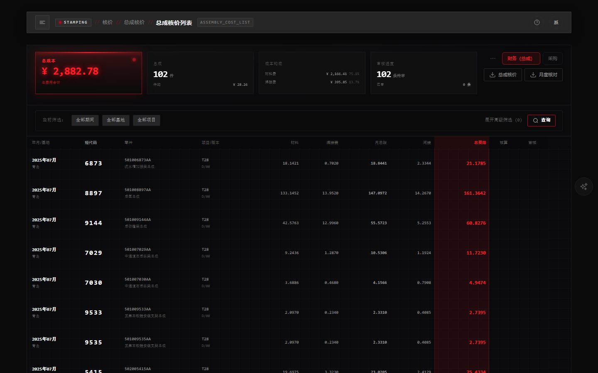
计算过程（溯源凭据）
一览操作列点计算过程，会新开一页报告。不算第二遍价，只把这张卡已经记下的账顺着材料清单拆回去：价格构成、零件构成树、焊装、摊入费用。 末章资料来源列出本账用过的 Excel：类别、文件名、行号、被哪些编号引用——这就是对账用的凭据。原件仍到「文件溯源」下载，本页不另存一份。 眼睛图标只打开本卡明细（材料行 + 间接行），没有构成树，也没有原件索引。采购价格协议行上同样能点「计算过程」。
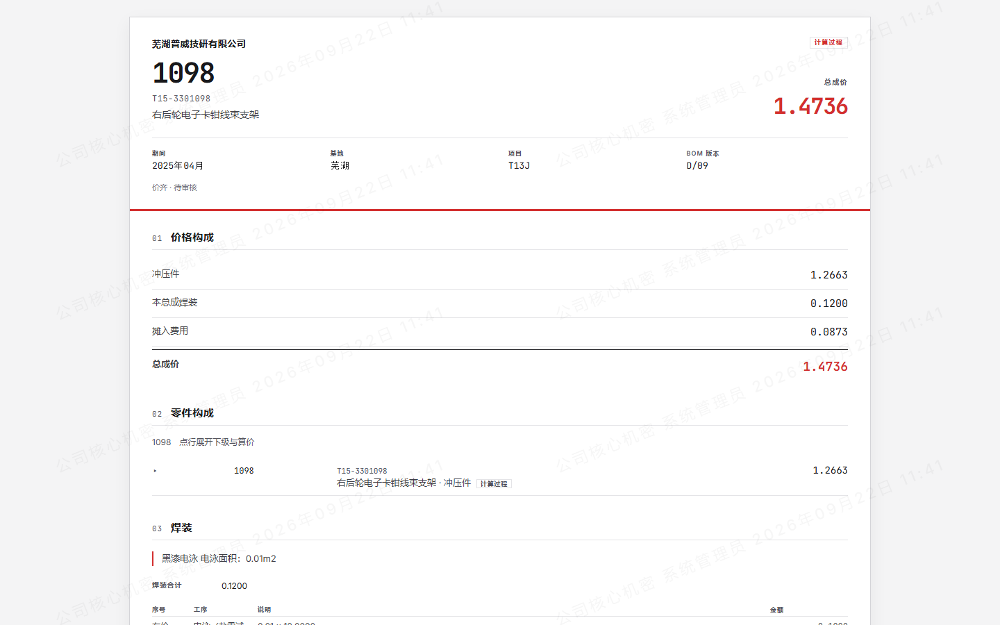
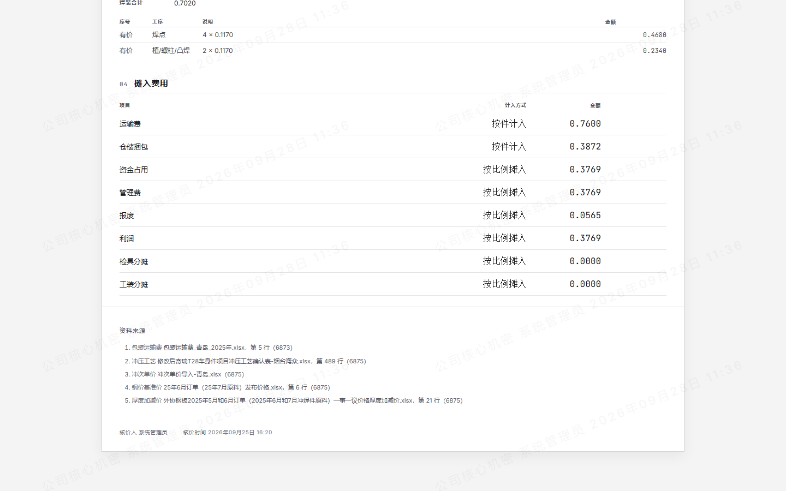
- 冲压钢材联动价 ① 政策落到材料规格 → 当月钢价。
- 冲压零件价格核算 ② 材料净额 + 加工费 + 模具费 + 检具费 → 自制件当月单价。
- 总成核价 ③ 按材料清单汇总月总账与总费用。操作列「计算过程」打开溯源报告。
- 自动核价引擎 只选基地 + 年 + 月；按 ①→②→③ 一次跑完。见下一节。
自动核价引擎
入口只有三个参数：生产基地、年度、月份。先「检查就绪」，再「启动核算引擎」。
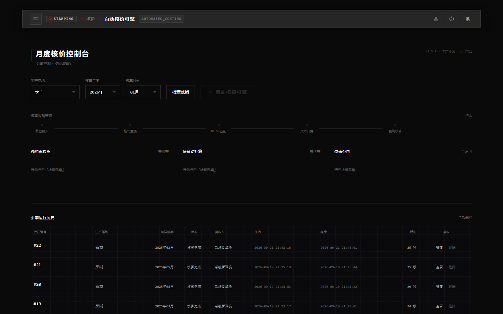
- 选范围 例如样例：芜湖 · 2025 · 01。
- 检查就绪 缺上传或缺配置会标红、过不了，可点「去处理」跳到对应页。厚度加减价：该钢厂本期已有政策但料厚对不上，会拦住启动；该钢厂本期没有厚度政策则不因此拦住。包装运输费缺档只提醒，不拦住启动。
- 启动核算引擎 缺的年度加工费、模具费、采购对象清单、焊接拆解、成品焊接费会自动补算；再跑当月钢材 → 冲压零件价 → 全部材料清单版本的总成核价。检具费不在引擎补算计划（上传档案；零件价缺档记 0）。有布点的项目缺生效模具单价，就算不下去。
- 看历史 一个任务通道看进度；任意状态（含运行中）的任务都可删除后重跑，避免本机关机后卡住。
采购价格协议
平台最终成果：给二级厂签《批量零部件价格协议》。一级菜单，与核价并列。只读查询 + 导出，不算价。
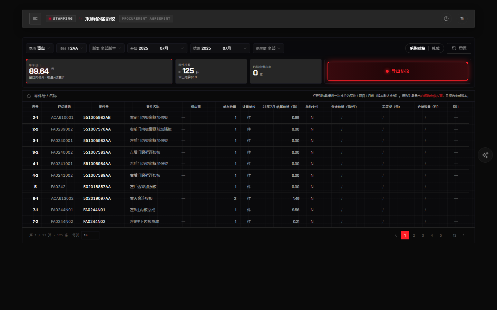
- 入口 在核价之后、文件溯源之前。不在核价子菜单里。
- 视图 默认「采购对象」（可筛供应商，一家一导）；「总成」整包一份、不筛供应商、乙方现场填。
- 窗口 最多 12 个月；打开页面默认最近一次核价的单月。缺结算价显示斜杠。
- 前提 采购对象视图须先有采购对象清单；总成视图不依赖清单，但要先有材料清单和已算的总成价。
- 计算过程 行上可打开与总成核价同一套报告：构成树 + 资料来源（Excel 凭据）。不算价。
文件溯源
侧栏独立入口。所有历史上传的 Excel / 原件在此筛选；操作列打开详情，核对是哪一次上传写入了核价主数据。
- 筛选 分类、基地、年、月、项目、上传人、文件名。
- 详情 不改业务数据，只查档案。总成「计算过程」末章「资料来源」写的文件名，原件在这里下载。
- 权限 无权限时菜单隐藏。
工程变更
侧栏「工程变更」在文件溯源之下，其下两路并列。 设计变更：换号、此件不装、增加零件、完成停止。 材料变更：零件号不动，只换材料和料厚。 不要在材料清单、冲压工艺、模具布点的上传页整份重传覆盖。
设计变更
投产之后，顾客改图换号、此件不装、增加零件、完成停止，走「工程变更 → 设计变更」。
- 上传工程变更 选采购基地、项目、生效年/月，上传工程变更 Excel。上传后系统自己处理，本页看进度。
- 工程变更单列表 按变更单行查询；可筛年/月/基地/项目/状态/变更类型。删任意一行，等于撤销这一次上传（变更单和关联记录都去掉）；原件仍在文件溯源。
设计变更怎么传
- 定生效月 上传页的采购基地、项目、生效年月必须与工程变更单一致（不填清单版本、不填顾客）。生效月 = 新结构从哪个月启用；变更前总成用到前一月到期（行不删）。生效月须晚于旧总成生效月。
- 下模板或按样表填 「下载模板」就是五种填法对照本。必须有这三张表：工程变更单、车身件材料清单、冲压工艺确认表。不含「零件汇总」。
- 变更单一行一种改法 类型只准四句：完成停止 / 改图 / 增加零件 / 此件不装。零件层级只准：总成 / 一级 / 二级。同一本可多行；同一总成多场景须连续行并合并变更前/后总成格。
- 新旧号以表格为准 系统照抄工程变更单与材料清单已经写出的号，不会自己把零件号往后顺延。材料清单总成列 = 变更后总成；中间分总成新号以材料清单为准；只写变化的行。这棵结构没有「增加零件」时，能对上的旧零件用量须等于变更前总成（此件不装只能写 0）。
- 上传后核对 成功后到列表看变更单行（那是变化记录条数，不是换了几棵树，也不是采购对象件数）。 Excel 只写改了什么；系统建立的是完整新结构。按工程变更版本筛选，数的是采购件。 设计变更会自动按新结构列入采购对象（数采购件），并从旧结构结果抄焊接拆解；换号则自动抄包装运输费（新旧交货总成）和年度零件价（换了号的零件），并把旧号上已成功的材料变更抄到新号。新加零件的年度价仍要人补。工艺 / 模具列表带生效和到期月份（可含已到期）；月度核价按账期月取仍有效的结构与工艺。
四种变更类型（操作要点）
- 完成停止 变更后总成空；材料清单不写该总成。整棵交货总成到期停交；旧工艺 / 布点不到期。
- 改图 写出旧→新总成。层级=总成时零件两列空；一级/二级写出改图层旧→新号，材料清单写出整条换号链。工艺确认表给出新号（含简图）。有旧布点则系统从库逻辑建立新号布点（简图从工艺确认表抄）。工艺行上的材料字仍是投产那一格，不改写成后来的材料变更。
- 增加零件 变更后总成须写出新号；变更前零件空、变更后零件写新号；材料清单只写新件（用量 > 0）；冲压件须出新号工艺。不停旧工艺；无旧布点可对则不建布点。
- 此件不装 变更后总成须写出新号；用量 0 且备注含固定句「此件不装」（双信号缺一拒收）；变更后零件空。不碰布点。
材料变更
零件还能直接换装、只是材料和料厚从某个月换成另一套，走「工程变更 → 材料变更」。零件号不变。影响互换、必须换号的，走设计变更。
- 上传材料变更 选采购基地、项目、生效年/月，上传材料变更 Excel。上传后系统自己处理，本页看进度。一条不过，整本拒绝。
- 材料变更列表 按零件行查询；可筛年/月/基地/项目/状态。行数是零件行数，不是上传了几本。删任意一行，等于撤销这一次上传；原件仍在文件溯源。
材料变更怎么传
- 定生效月 上传页的采购基地、项目、生效年月必须和表里一致。一本只能一个基地、一个项目、一个月。生效月须晚于工艺投产月；工艺刚投产的那个月不能改材料。这个零件这个月已经有设计变更，换一个月再传。
- 下模板 「下载模板」只有两张表，顺序必须是「材料变更填写说明」「工程变更单（材质）」。只收 .xlsx。说明表只认表名。变更单第 1 行是十二个列名：基地、项目、变更版本、生效年月、冲压工厂、零件号、零件名称、变更前材料、变更前料厚、变更后材料、变更后料厚、互换性。
- 版本与格子 变更版本写成 MAT- 加六位数字，并且等于生效年月。2026年06月就写 MAT-202606。一本只写一个版本，这个版本传过了就要换更晚的月，或先到列表删掉原来那本。生效年月写成「2026年6月」或「2026年06月」，也可以直接选成日期。除两列料厚外，格子必须是文字，不要前后空格。料厚填大于 0 的数字，最多两位小数，例如 1.5。互换性只准「不影响互换性」。
- 变更前必须是现在正在用的 变更前材料、变更前料厚等于这个月系统里正在用的（已有材料变更则等于最新一刀，否则等于工艺）。变更后材料必须是牌号分类里已有的牌号，字要完全一样，而且不能和变更前一样。变更后料厚和变更前相差不能超过两成。零件名称、冲压工厂全称都要和工艺一致。同一个零件不要写两行。
- 上传后核对 成功后到列表看每一个零件。系统不改工艺行上的材料字；核价从生效月起按变更后的材料和料厚取价。再变就另起一本更晚的月。拼焊件、利废件、废料副产品不能改材料。冲压零件列表里可以打开该件的材料变更记录，删除仍只在材料变更列表整本做。
主数据
绝对上游档案。一事一议和核算只读，不在此切片之外写入牌号分类。
- 牌号分类 一个牌号一行，挂冷轧 / 镀锌 / 酸洗。只在本页手工新增或编辑。冲压工艺、基准价导入不自动补档；缺牌号整批拒绝。档案仍被零件材质或基价引用时不能删除。
设置
侧栏末项。个人资料各人可改；系统费率、用户权限、操作日志须有相应权限。
- 个人资料 侧栏名「个人资料」。右上角用户菜单进入同一页，文字是「账号设置」。维护姓名、部门、邮箱、电话、头像；修改登录密码须校验原密码。
- 系统费率 菜单名「系统设置」。全站共用：钢材密度、冲压材料损耗率、废料回收率、财务费率、管理费率、仓储+包装，管理费用率、报废率、税前利润率、摆剪钢价加价。修改后作用于之后的重算，不改变已经写入的核价结果。
- 采购协议备注 同在「系统设置」。公司名称导出为《批量零部件价格协议》的甲方，未填则甲方为空；文尾条款写入协议「备注」区。保存之后，新导出的协议才用这份内容。
- 用户权限 菜单名「用户管理」。新增或停用账号、改密码。仅管理员可以授权：勾选功能权限后保存。无权限的菜单在侧栏隐藏。管理员账号默认全部权限，不对其展示授权入口。
- 操作日志 按操作人、IP 地址、功能、动作、结果、时间查询；可导出。记录时间、操作人、操作、对象、结果、IP。
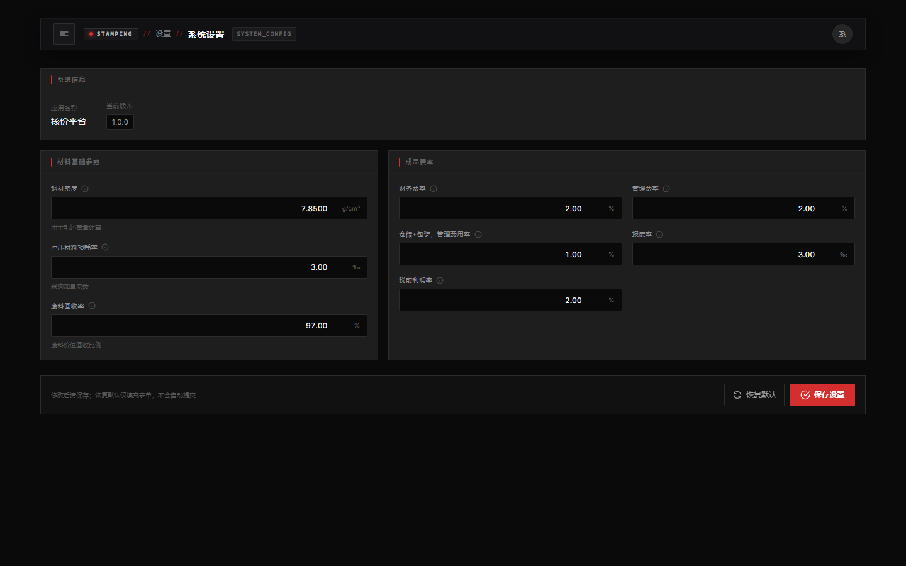
AI 助理（核价智能分析）
屏幕右侧中部圆钮（标题 AI助理）打开浮窗。本平台核总成、分总成、冲压件；数字由核价库计算，AI 只负责用自然语言解释——问什么答什么，不铺固定报告模板。
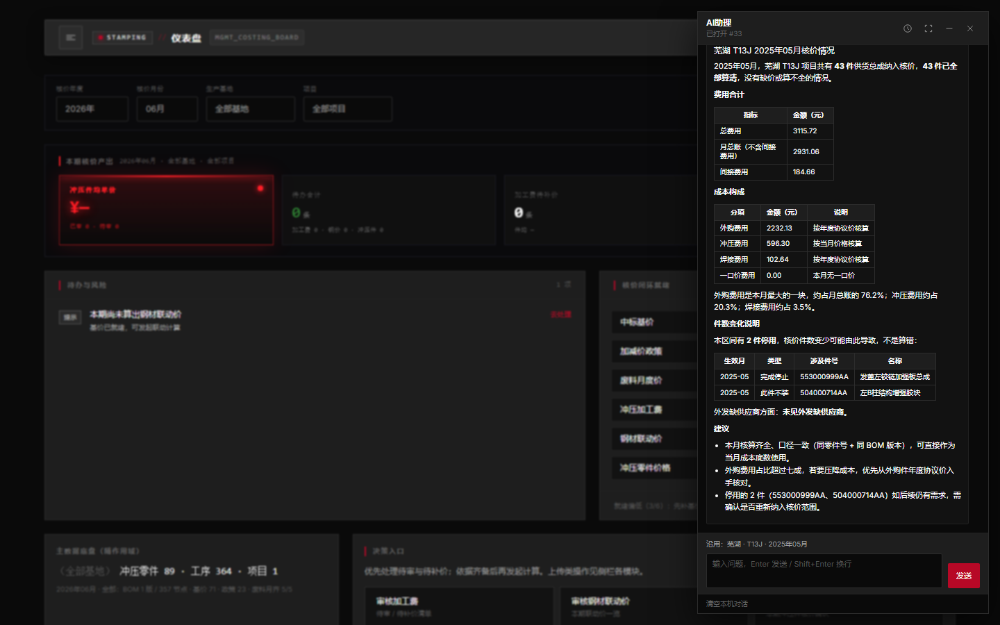
- 提问 直接输入，例如：「芜湖 T13J 近 3 个月成品价趋势」「今年与去年对比」「502007390AA 为什么涨了」。可接着问「那芜湖呢」「贵在哪」——系统沿用上一问的基地、项目和期别。清空本机对话后重新提问。对话进行中从历史点开只是阅读；若要接某条历史接着问，先清空再打开那一条。
- 等待分析 系统在后台计算；状态栏显示进行中，完成后聊天区一次展示说明。
- 分析历史 点浮窗右上角时钟图标，查看本人历史记录（分页加载）；可重开、删除。管理员也只能看自己的记录。
- 导出 单条回答可打印或导出 Word（含问句、范围与时间元信息）。点打印会新开一页打开带网址的《AI 分析报告》，不立刻弹出系统打印框。
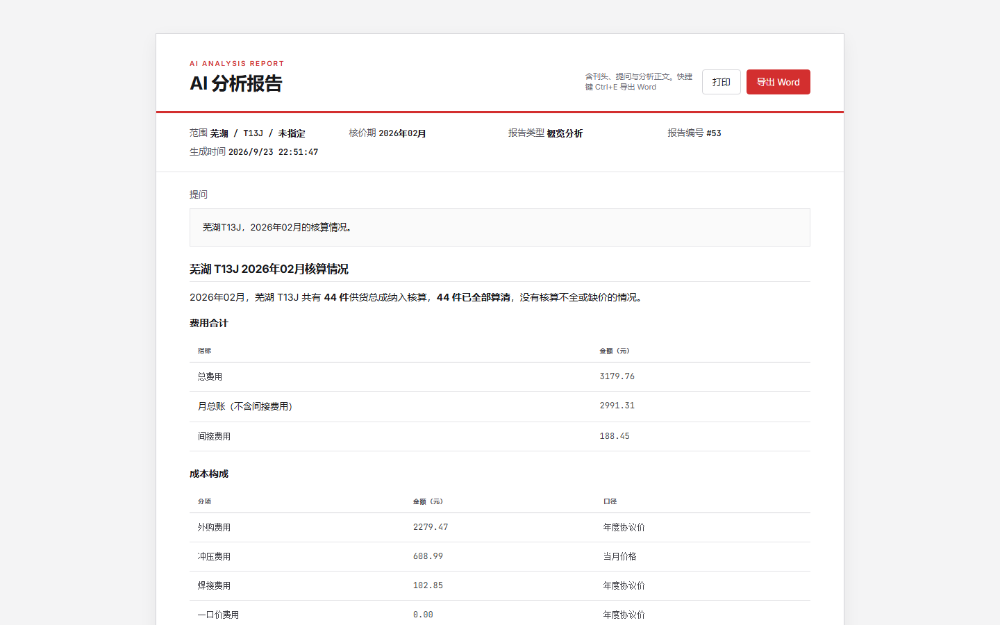
- 没有分析权限时，右侧圆钮会隐藏。
- 没接大模型时仍可分析，说明会改成规则摘要。
- 问操作步骤（如「怎么上传工艺」「采购对象在哪」）会命中本帮助语料，不编造菜单路径。
导出 Excel
各列表页有「导出 Excel」；总成核价一览还有「导出月度核对」（多表一本）；「采购价格协议」页导出的是《批量零部件价格协议》。
- 月度核对导出：须选定年 / 月 / 基地 / 项目；清单版本可选（空=该月全部版本字）。同一文件串联总成价、冲压零件价、加工费、钢材联动、年度价、包装运输、焊接单价等，带封皮说明。只导出、不算价。
- 采购价格协议「导出协议」：与页上筛选同一套（含采购对象 / 总成视图），不分页、无水印。采购对象视图筛一家供应商即一份；总成视图整范围一份。先算总成核价才有结算价。
- 单表：只审某一环节时用对应列表的导出按钮（含模具费、检具费、采购对象、中标厚度价）。
- 无导出权限时按钮会隐藏或提示。
操作问答
- 看不到某个菜单？ 由管理员在「设置 → 用户管理」开通权限后刷新。仅管理员可以授权。
- 引擎一直运行中？ 本机异常关机可能导致自动核价引擎任务卡住。在「核价 → 自动核价引擎」的运行历史中删除该任务后重新启动。删除不会撤销已写入的钢材价、零件价或总成价。
- 采购价格协议和采购对象有什么区别？ 「焊接工程 → 采购对象」只管集合：买哪些、外发还是自制、供应商是谁，不管价。「采购价格协议」（一级菜单）读已算的应成本，按合同期横排月列，导出给二级厂签字的协议。拆到冲压件 / 分总成签用「采购对象」视图；整包总成签用「总成」视图。
- 为什么问「采购对象的费用是多少」答不出来？ 采购对象清单没有费用字段，也不按年裁剪（档案台账）。要看钱：单件价直接问「2856的价格多少」；按供应商签协议、横排月列结算价，打开「采购价格协议」（须先算总成核价）。清单本身只答「待确认外发还有多少」「某件是外发还是自制」这类状态问题。
- 投产后改图、换零件号走哪里？ 走「工程变更 → 设计变更 → 上传工程变更」。材料清单 / 冲压工艺 / 模具布点页只用于投产第一次上传；已经投产之后再传，文件里出现新零件号会整份拒绝。设计变更须含工程变更单、车身件材料清单、冲压工艺确认表；不含「零件汇总」。零件号不变、只换材料和料厚，走「工程变更 → 材料变更」。
- 工程变更上传失败或想撤销？ 业务失败时系统会先撤掉写了一半的数据再记失败。设计变更成功后要撤销：打开「工程变更单列表」，删任意一行即整本撤销；原件仍在「文件溯源」。进行中、后面还有没撤销的变更、或采购对象已审未反审，会拒绝删除。材料变更成功后要撤销：打开「材料变更列表」，删任意一行即整本撤销。进行中不能删；这个零件后面还有更晚的材料变更，先删更晚的那本。
- 设变后哪个月用新号？这个月核价用旧号还是新号？ 看变更单上的生效月：生效月及以后按新零件号核价；生效前一个月及更早仍按旧零件号。变更当月新旧零件可以各有一张价格卡——旧号用到生效前一月，新号从生效月起。旧零件到期后，协议只带这个月仍有效的件，已到期的旧号不进签约清单。撤销这次变更之后，当作没做过，核价只认当前这个月仍有效的件。
- 为什么新版本采购对象有 17 个，而变更单只有 5 条？ 菜单叫「采购对象」，这里数的是采购件。这两个数字统计的不是同一件事。4 是交货总成的数量。17 是数采购件的结果。 变更单记录的是本次变化条数（本例 5 条）；系统再判断哪些交货总成要停、哪些要换成新结构。本例 1 棵完成停止（旧的到期，不再启用新总成，历史仍在），4 棵换成新结构。 换成新结构，是在材料清单那个序号上拿掉旧交货总成、挂上完整新结构，不是只改 Excel 写到的零件。 新结构整体属于材料清单版本（如 EC-202507）：版本说明这棵结构属于哪一版，不是说明哪些零件被改过。 因此筛该版本时，是在这 4 棵新结构上数采购件（含原号继承过来的件）。 数字不同是正常的。17 不是「这次新增或修改了 17 个零件」，而是「这 4 棵新结构当前共有 17 个采购件」。
- 增加零件进入采购对象后，厂家是否须自行填写？ 要。系统不自动抄供应商；外发须在「采购对象」确认并指定厂家，否则签协议时筛不出来。
- 成品核价计算卡住了？ 总成核价（旧称成品核价）计算时，本机异常关机或关闭浏览器后，计算历史里可能仍显示计算中，系统会拒绝重复提交。打开「核价 → 总成核价计算」（路径即成品核价计算页），在页面下方计算历史中找到状态为「计算中」的记录，点删除，再重新「开始计算」。删除只清掉这条计算记录，不会撤掉已经写入总成核价一览的数据。
- AI 助理一直分析中？ 同一时间每人最多 2 个并发任务。若长时间无响应，可缩小时间范围后重试，或清空本机对话后重新提问。
- 需要了解概念或计算细节？ 见 知识库；数据对照见 样例。